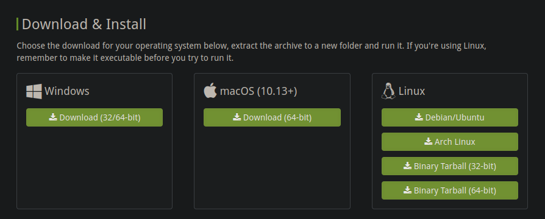
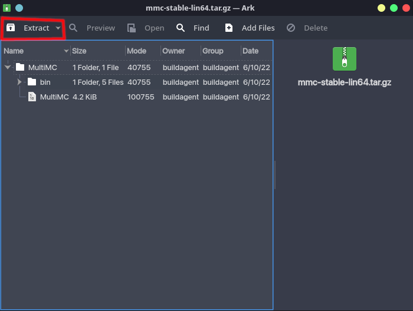
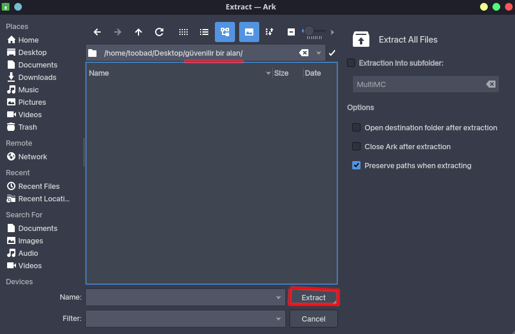
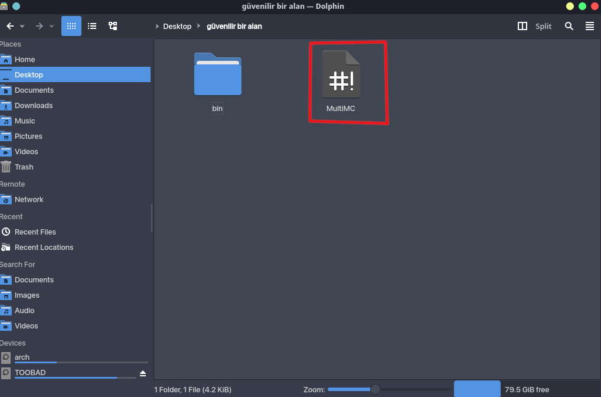
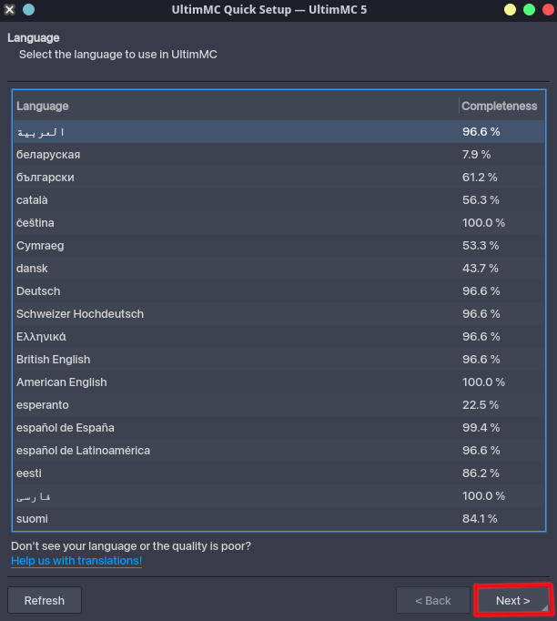
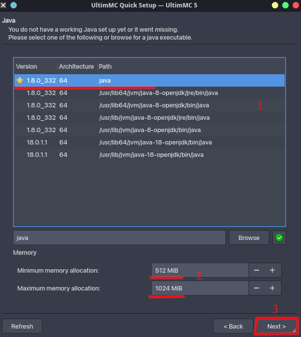
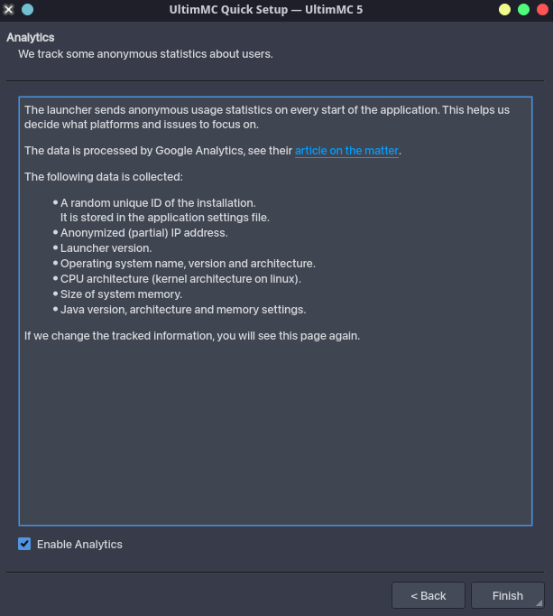
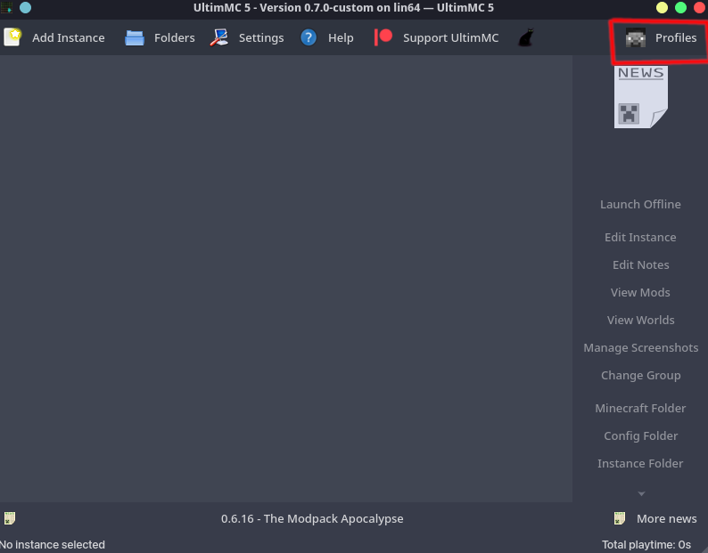
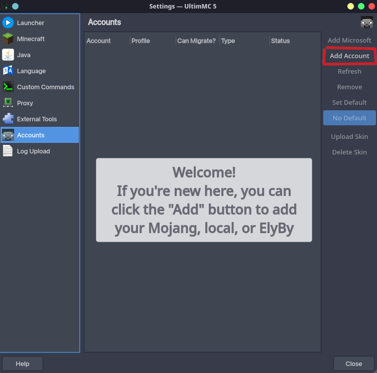
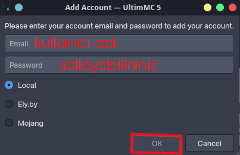

MultiMC kurulumu. (Minecraft hesabına sahip olmayanlar için)
- ArtifexMC Mod Suite'ini çalıştırabilmeniz için MultiMC'ye ihtiyacınız vardır. MultiMC, benim de kesinlikle önerdiğim, normal Minecraft launcherından kat be bat daha iyi olan bir launcherdır. MultiMC kullanmamızın sebebi, çok kolay bir kurulum aşamasına sahip olmasıdır.
- Öncelikler: ArtifexMC Mod Suite 1.3, Minecraft 1.7.10'da çalışmaktadır. Bu da Java 8 gerektirmektedir. Eğer bilgisayarınızda Java 8 yoksa, internetten platformunuza göre nasıl indirileceğine bakabilirsiniz. Karışık olan bir şey olmadığını düşündüğüm için buraya nasıl kurulacağını eklemedim. Basitçe anlatmak gerekirse, Windows kullananlar internetten kurulum dosyası indirerek, GNU/Linux veya macOS kullananlar ise terminaldan kendi paket yöneticileri yardımıyla kurabilirler. (Ben Arch Linux kullanıyorum, bende "sudo pacman -S jdk8-openjdk" komutu ile direk kurulabiliyor.)
- Her şeyin tamam olduğunu düşünüyorsanız, aşağıdaki adımları uygulayın :
- Bu linke girin ve aşağı inin. Platformunuza göre uygun dosyayı indirin.

- Ardından favori arşiv yöneticiniz ile arşivi açın (benimki Ark, K Desktop Environment ile gelen varsayılan arşiv yöneticisi, siz muhtemelen WinRAR/7-Zip kullanıyorsunuz)

- Ve güvenilir olduğunu düşündüğünüz bir yere MultiMC'nin dosyalarını çıkartın.

- çıkarttıktan sonra çıkarttığınız yere gidin ve MultiMC çalıştırılabilir dosyasını çalıştırın. (windows:MultiMC.exe, linux:MultiMC)

- Karşınıza böyle bir pencere gelmesi lazım. Buradan kullanmak istediğiniz dili seçin ve "Next" butonuna basın.

- Ardından karşınıza Java seçenekleri bölümü gelecek. Buradan size başta kurmanızı söylediğim Java 8'i seçin (1.8.0). Ve Minecraft'a ne kadar RAM vermek istediğinizi de aşağıda belirtin. Benim önerim:
| 4GB RAM'li PC için |
8GB RAM'li PC için |
16GB RAM'li PC için |
| Min:512MB,Max:2048MB |
Min:1024MB,Max:4096MB |
Min:2048MB,Max:6144 |

- Sonra bir de bu ekran var. Basitçe anlatmak gerekirse aşağıdaki tiki tikleseniz MultiMC, sizin bilgisayarınızın donanımı ile alaklı bilgileri anonim bir şekilde sunucularına gönderecek. Karar sizin. Kararınızı verdiğinizde "Finish" butonununa basabilirsiniz.

- MultiMC kurulumunuz tamamlandı. Şimdi sırada hesap kurulumu var. Sağ üstteki "Profiles" butonuna tıklayın. Ardından çıkan çekmeceden "Manage Accounts" butonuna tıklayın.

- Böyle bir pencere açılacak. Crackli hesabınızı eklemek için "Add Account" butonuna tıklayın.

- Açılan pencerede sunucuya girmek istediğiniz kullanıcı adınızı E-Mail kısmına yazın. Şifreyi sallayabilirsiniz (bkz. asdfghjklşi). Ardından "OK" butonuna basın.
